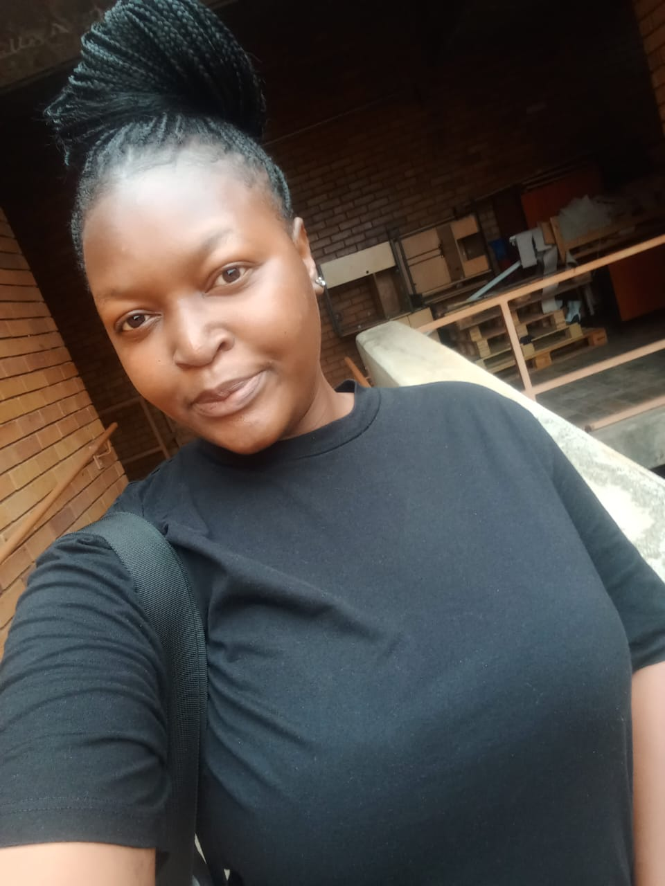
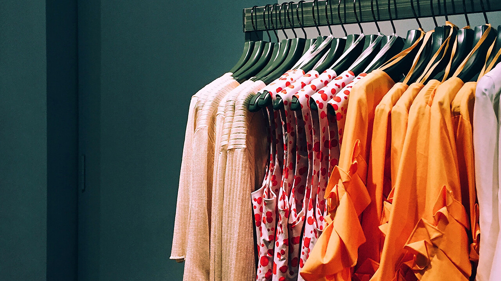
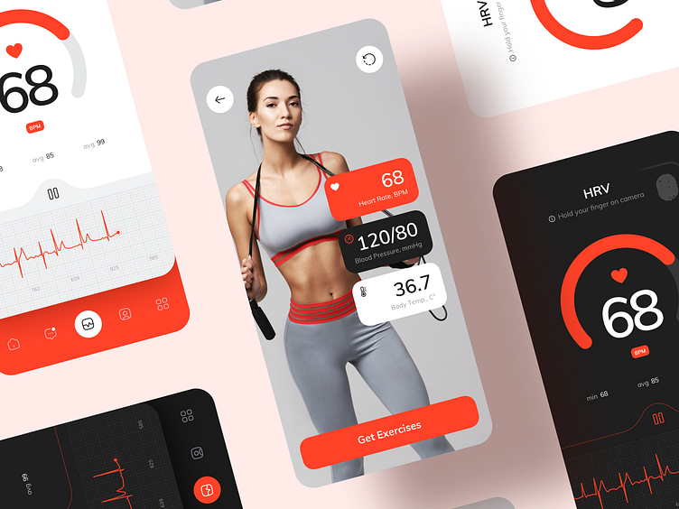
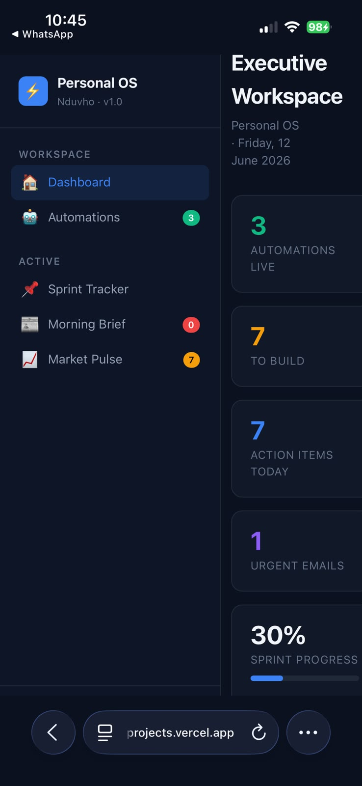

HTML
Intermediate
Hello, I'm
Software Developer


Get To Know More


< year
Software Development

Power Platform Developer
Software Developer Intern
I am a Software Developer and an AI System Developer Intern at 4IR Lab. I aim to leverage my programming skills, artificial intelligence expertise, and passion for technology to contribute to innovative projects. I seek to gain hands-on experience in software development and AI-driven solutions while collaborating with experienced professionals to enhance my technical proficiency. My goal is to support the team in delivering high-quality software and intelligent systems while learning about the latest industry trends and emerging technologies. I am eager to develop my problem-solving abilities, build scalable applications, and adapt to a fast-paced work environment. Ultimately, I strive to make a meaningful impact during my internship by contributing to both software development and AI innovation.
Explore My
Intermediate
Intermediate
Basic
Basic
Intermediate
Basic
Basic
Intermediate
Intermediate
Intermediate
Advanced
Browse My Recent
The Fingerprint Access Scanner System is a biometric security solution designed to control and monitor access to restricted areas using fingerprint authentication. It replaces traditional key or password-based systems with a more secure , fast, and user-friendly method of identification.

An Ecommerce Web Application that helps you Buy Everything you can think of and helps you compare the prices
This web application allows patients to easily book, manage, and track their appointments with doctors online. It’s designed to simplify the process for both patients and healthcare providers by offering a centralized platform for scheduling and communication.
OnlineAppForm-An online application system that allows students to submit personal details, choose specialization, upload documents, and apply for 4IR-TUT programs.
CV Scanner & Job Portal – Three-Phase Project This is a three-phase development project. Phase 1 delivers a simple, professional website for my automation company to establish our online presence. Phase 2 introduces an AI-powered job portal where employers can post jobs and candidates can apply online . Phase 3 integrates a smart CV scanner using natural language processing to automatically analyze resumes, match them with job requirements, and help employers identify the most suitable candidates quickly. The platform includes a user-friendly dashboard, secure file uploads, and real-time application tracking for a seamless hiring experience.

Smart Health Assistant (Agentic AI-Powered) The Smart Health Assistant is an AI-driven wellness tool that allows users to input their personal health information—such as age, height, weight, and lifestyle details—and automatically calculates their Body Mass Index (BMI). Using agentic AI, the system intelligently analyzes the results and provides personalized exercise recommendations tailored to the user’s fitness level and health category. The assistant acts autonomously, guiding users toward healthier habits with smart insights and actionable advice.
I developed a Smart Career Guidance Assistant using a multi-agent AI architecture in Google Colab. The system analyzes a user's educational background, skills, interests, and career aspirations to generate a comprehensive career guidance report. Multiple AI agents collaborate to perform specialized tasks , including career path recommendation, skills gap analysis, and labor market assessment. The assistant produces a personalized report that recommends suitable career paths, identifies in-demand skills to develop, suggests relevant certifications and learning opportunities, and provides a job market snapshot highlighting current industry trends and employment opportunities. This enables users to make informed career decisions based on data-driven insights and personalized recommendations.
AI Clothing Store Competitor Intelligence (LangGraph-based System) I developed an AI-powered competitor intelligence system using LangGraph in Google Colab to analyze clothing store competition within a specified geographic area. The system collects and processes data on nearby clothing retailers, evaluates factors such as pricing, product offerings, brand positioning, and market presence, and then generates a structured analytical report. Using a multi-step graph-based workflow, different AI components handle data extraction, analysis, and synthesis to produce insights on competitive strengths, weaknesses, and market gaps. The final output helps identify business opportunities and strategic positioning within the local fashion retail market.

I developed a system called PersonalOS using Claude Code, designed as an AI-powered personal productivity and automation platform. The system integrates multiple intelligent workflows to help manage tasks, information flow, and decision-making in real time. PersonalOS includes three core automation modules: Sprint Tracker Automation – Automatically tracks project progress, updates task status, and organizes work into structured sprints using Notion as the central database. It helps maintain visibility on ongoing development tasks and priorities. Morning Brief Automation – Generates a daily summary by reading data from Gmail, Google Calendar, and other connected sources. It provides a structured overview of upcoming meetings, important emails, and key tasks for the day. Market Pulse Automation – Continuously scans information from connected sources such as emails and Chrome activity to identify relevant updates, trends, and insights, then stores and organizes them in Notion for easy tracking. The entire system is built around Notion as the central data layer, enabling seamless synchronization between different automations and structured storage of all outputs. For deployment, the project is connected to Vercel, allowing the application to be hosted and updated automatically through continuous integration from the code repository. Overall, PersonalOS acts as an AI-driven operating system that consolidates productivity, information tracking, and automation into a single unified workflow.
Get in Touch